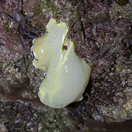
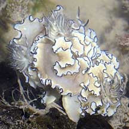
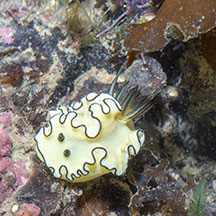
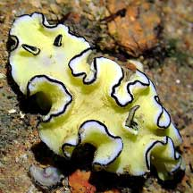
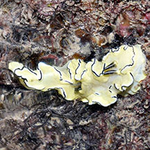
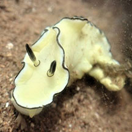
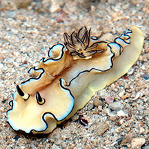
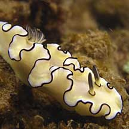

|
|
| nudibranchs text index | photo index |
| Phylum Mollusca > Class Gastropoda > sea slugs > Order Nudibranchia |
| Cheesecake
nudibranch Doriprismatica atromarginata Family Chromodorididae updated May 2020 Where seen? This lemon yellow nudibranch with black-edged ruffles, resembles a slice of cheesecake. It has twitchy gills. Commonly encountered on many of our Southern shores, on rubble near reefs, sometimes in rather large numbers. It is also sometimes seen on our northern shores. It was previously known as Glossodoris atromarginata. Features: 3-5cm long. A hard lemon-yellow body with an ruffled margin that is elegantly edged in black. It holds this portion of its body raised. The black edging is also found on the feathery gills and feathery rhinopores. There are black rings where the rhinophores emerge from the body. |
 Ruffle-edged body held raised. St John's Island, May 05 |
 Closeup of mouth and short oral tentacles. Sisters Island, Jul 06 |
 Feathery gills rotate constantly St John's Island, May 05 |
| The feathery gills rotate constantly to and fro. This is believed
to help improve respiration as unlike most other nudibranchs which
have thin body skins; the body skin of this nudibranch is rather thick
and probably doesn't allow much secondary respiration to take place
across the body skin. What does it eat? It eats sponges. Neville Coleman notes it eating these sponges: Fasciospongia sp., Spongia sp. and Luffariella sp. Members of the Family Chromodorididae absorb the toxic chemicals in their sponge food and incorporate these chemicals into the mantle glands on their backs which act to repel predators. |
|
 Under this nudibranch, there was a bare spot ... |
 A mating mess? Pulau Semakau, Nov 09 |
 Tiny one. St. John's Island, Nov 15 |
. |
| Cheesecake nudibranchs on Singapore shores |
On wildsingapore
flickr
|
| Other sightings on Singapore shores |
|
 |
 East Coast Park (B), Nov 16 Photo shared by Loh Kok Sheng on facebook. |
 Pulau Tekukor, Sep 18 Photo shared by Dayna Cheah on facebook.. |
|
 Terumbu Pempang Laut, Dec 18 Photo shared by Jianlin Liu on facebook. |
 Pulau Biola, May 10 |
| Filmed at Terumbu
Bemban Jun 10 3 Black-margined nudibranch together from Loh Kok Sheng on Vimeo. |
| shared by Neo Mei Lin on her blog |
Links
|